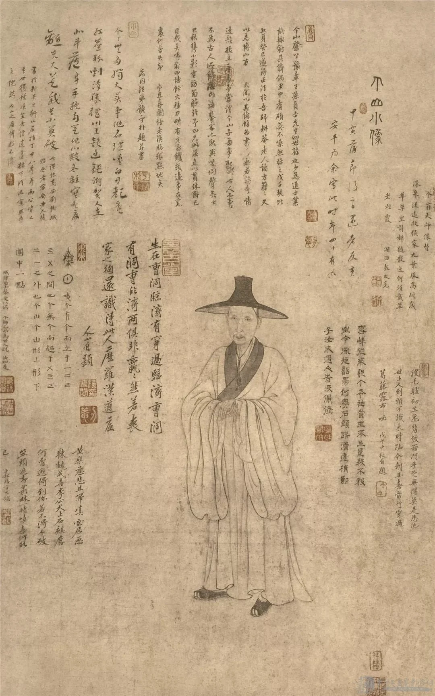
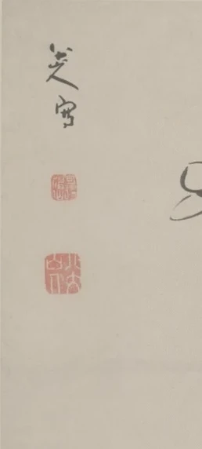
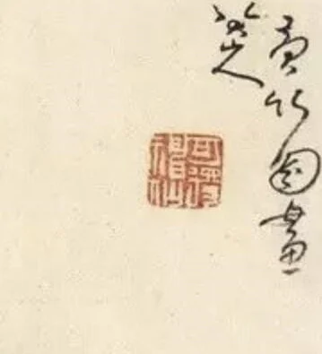
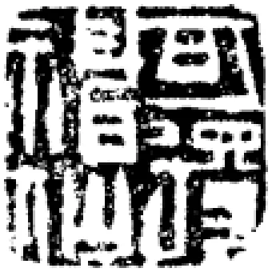
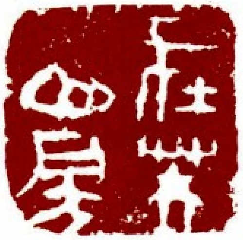
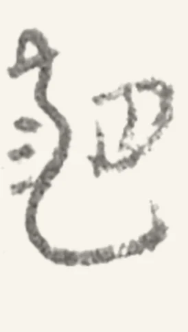
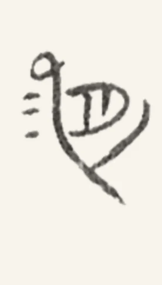
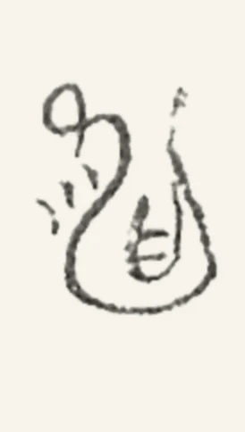
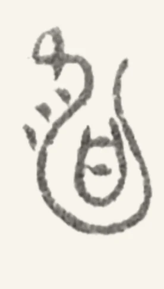

1626—1644
南昌少年与明清易代
朱耷生于江西南昌，是明宗室宁王朱权一系的后裔。他成长在有诗书画传统的家庭，早年已接触作诗、写字和绘画。1644 年，明朝覆亡，宗室身份使他的处境发生剧变。多年以后，他在《个山小像》上留下「西江弋阳王孙」一印，仍能看出这段身世。
「大音希声」出自《道德经》。借这四个字看八大山人晚年的水墨，一根线、几团墨和大片留白，便能让人感到画里的动静与分量。
怎么看
从整张画的黑白分布，看进一根线、几层墨和一个眼神。最后，读一读角落里的署名。
先找画上最重的几团墨。荷叶和石头之间隔着大片空白，细长的荷茎把上下连起来。试着顺着茎走一遍，再回到石顶的小鸟。
其人
明代宗室后裔、禅门中的传綮、署名「八大山人」的书画家。几个名字，留下了他在不同岁月里的踪迹。

1626—1644
朱耷生于江西南昌，是明宗室宁王朱权一系的后裔。他成长在有诗书画传统的家庭，早年已接触作诗、写字和绘画。1644 年，明朝覆亡，宗室身份使他的处境发生剧变。多年以后，他在《个山小像》上留下「西江弋阳王孙」一印，仍能看出这段身世。
1648—1670 年代
入清后，朱耷在江西奉新一带出家，法名传綮，曾用「个山」等号。1659 年的《传綮写生册》画了花果、蔬菜和奇石，题字也有多种写法。1674 年，友人黄安平为他绘制《个山小像》，他在画上题记当时「四十有九」。
《传綮写生册》研究 · 台北故宫博物院约 1680—1684
约 1680 年前后，他离开僧门，回到南昌。邵长蘅的传记写到他焚弃僧衣，又记他在门上大书「哑」字。画上留着另一条线索：《秋林独钓图》只署一个「驴」字。约 1684 年起，他开始用「八大山人」这个名号。
1684—1705
朱耷写给方士琯的信谈到送画、谢赠和邀约，留下了画家日常交游的细节。1697 年，他画成《河上花图》，并在卷尾写下作画的月份与受画人。1705 年，朱耷去世。
生于江西南昌。
明朝覆亡。
出家，法名传綮。
作《传綮写生册》。
黄安平为其绘《个山小像》。
开始使用「八大山人」一号。
作《河上花图》卷。
卒于南昌。
这些故事见于邵长蘅《八大山人传》，收入《青门旅稿》卷五。
书画作品
立轴先看全幅，手卷逐段读，册页和手札按开翻阅。选一件，看看笔墨与文字怎样留住他的日常。
他取法王献之、颜真卿，也从欧阳询、黄庭坚和董其昌的书法中吸收不同笔法。沿着早、中、晚三段看，可以观察到字形和笔势的变化。
书画史地位
把朱耷放回清初画坛，再看后世怎样收藏、评论和学习他的作品。
款识与印章
款识是写在作品上的题署，花押是手写的符号，钤印则是盖上去的印记。把这三种痕迹放在一起，才读得出画角里的信息。


左为《荷石水鸟图》款印，右为《安晚册》款印。看四个字如何靠拢，再看红印和墨字相隔多远。「哭之」「笑之」是后人对连缀字形的一种形容。


左为「可得神仙」，右为「在芙山房」。前者是闲章，后者是斋馆印。两方印的文字都呈浅色，这种刻法称为「白文」。
顾文彬从字形辨出「三月十九」，联系到崇祯末日。白谦慎把它和周器铭文、作品纪年相对照，释为表示闰年的「十有三月」。两种说法依据不同，先看几个写法共有的笔形，再读各自的解释。



